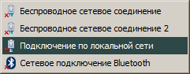
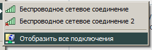

| Classic Shell http://www.classicshell.net/forum/ |
|
| The connections menu shows wrong icons http://www.classicshell.net/forum/viewtopic.php?f=12&t=2584 |
Page 1 of 1 |
| Author: | Anixx [ Sat May 03, 2014 9:00 am ] |
| Post subject: | The connections menu shows wrong icons |
This is how the connections menu is shown in Classic Shell:  As you can see, all icons are shown with the red cross over them, even active. Also, they show a connector even for wireless connection (possibly the same icon for all connection types). This is how the menu is shown in WinXP Explorer run under Win7:  The red cross is only over the inactive connections and the icon shows the "stairs" for the Wi-Fi connections thus indicating the connection type, which is more useful. |
|
| Author: | Gaurav [ Sat May 03, 2014 9:27 am ] |
| Post subject: | Re: The connections menu shows wrong icons |
Yes, this is a known issue that occurs in Classic Shell versions after 3.6.8: viewtopic.php?f=12&t=2563 |
|
| Author: | Gaurav [ Sun Jul 26, 2015 10:37 pm ] |
| Post subject: | Re: The connections menu shows wrong icons |
This is fixed for Windows 7 style in Classic Shell 4.2.0, and for the classic styles in Classic Shell 4.2.3 release candidate. |
|
| Page 1 of 1 | All times are UTC - 8 hours [ DST ] |
| Powered by phpBB® Forum Software © phpBB Group https://www.phpbb.com/ |
|